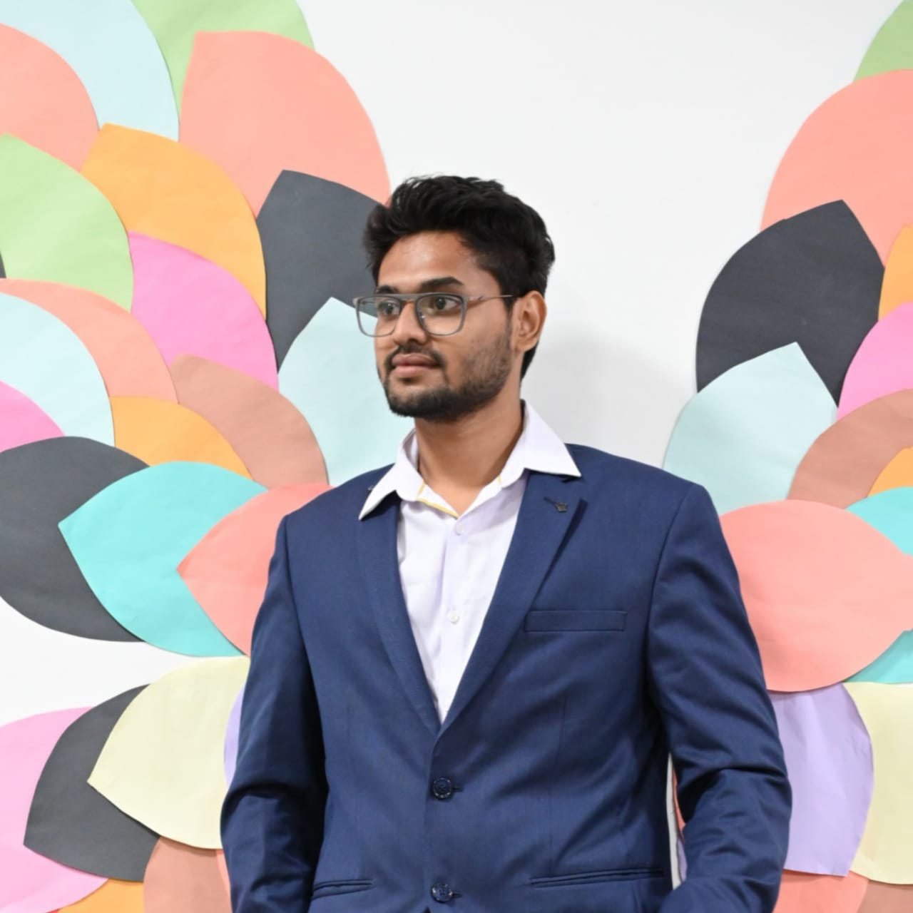

About Me
Software Application Developer Intern with experience in enhancing portal features and integrating configurations at Cambridge Mobile Telematics. Adept at converting pages from Django templates to React, improving frontend performance.
Contact: vishaldonda89@gmail.com
Education
- Indian Institute of Information Technology, Sricity - Electronics and Communication Engineering (CGPA: 7.6)
- Sri Chaitanya - Board of Intermediate Education, AP (CGPA: 9.79)
- Sri Prakash - Central Board of Secondary Education (CGPA: 10)
Experience
- Cambridge Mobile Telematics - Software Application Developer Intern
- Built and enhanced portal features, integrating configurations to existing systems.
- Converted pages from Django templates to React, improving frontend performance and page load times by 30%.
- Developed and automated 25 web pages using Selenium Pytest; transitioned scripts to Playwright for scalability.
- Integrated Python Upgradation Models for driver behavior analysis in crash and claims management.